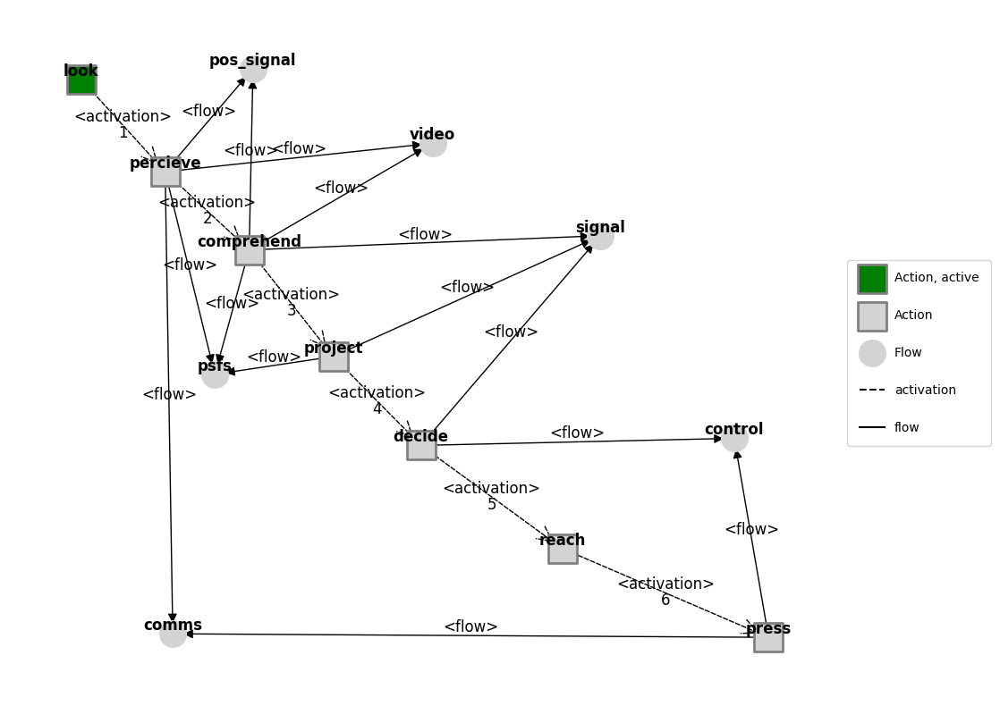
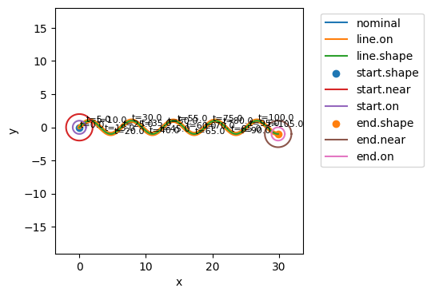

More Human Failure Analyses
from fmdtools.sim.sample import ParameterDomain, ParameterSample, FaultDomain, FaultSample
import fmdtools.analyze as an
import fmdtools.sim.propagate as prop
import numpy as np
import matplotlib.pyplot as plt
plt.rcParams['pdf.fonttype'] = 42
import multiprocessing as mp
import scipy.stats as stats
import multiprocessing as mp
from examples.rover.rover_model_human import RoverHuman, RoverHumanParam, asg_pos
from examples.rover.rover_model import plot_map
mdl = RoverHuman()
g = mdl.as_modelgraph()
fig, ax = g.draw()
g.set_exec_order(mdl)
fig, ax = g.draw()
ag = mdl.fxns['operator'].aa.as_modelgraph()
ag.set_pos(**asg_pos)
fig, ax = ag.draw()

fig.savefig("action_graph.pdf", format="pdf", bbox_inches = 'tight', pad_inches = 0)
mdl = RoverHuman(p={'linetype': 'sine', 'period': 10, 'amp': 3, 'drive_modes': {'mode_options':'manual'}})
er, hist = prop.nominal(mdl)
fig, ax = plot_map(mdl, hist)

mdl.fxns['drive'].m.faultmodes
{'elec_open': Fault(prob=1.0, cost=0.0, phases=(('drive', 1.0), ('start', 1.0)), disturbances=(('s.transfer', 0.0),), units='sim'),
'stuck': Fault(prob=1.0, cost=0.0, phases=(('drive', 1.0), ('start', 1.0)), disturbances=(('s.friction', 10.0),), units='sim'),
'stuck_right': Fault(prob=1.0, cost=0.0, phases=(('drive', 1.0), ('start', 1.0)), disturbances=(('s.friction', 3.0), ('s.drift', 0.2)), units='sim'),
'stuck_left': Fault(prob=1.0, cost=0.0, phases=(('drive', 1.0), ('start', 1.0)), disturbances=(('s.friction', 3.0), ('s.drift', -0.2)), units='sim')}
fd_hum = FaultDomain(mdl)
fd_hum.add_all_fxn_modes('operator')
fd_hum
FaultDomain with faults:
-('roverhuman.fxns.operator.aa.acts.look', 'failed_no_action')
-('roverhuman.fxns.operator.aa.acts.percieve', 'failed_no_action')
-('roverhuman.fxns.operator.aa.acts.percieve', 'not_visible')
-('roverhuman.fxns.operator.aa.acts.percieve', 'wrong_position')
-('roverhuman.fxns.operator.aa.acts.comprehend', 'failed_no_action')
-('roverhuman.fxns.operator.aa.acts.project', 'failed_fast')
-('roverhuman.fxns.operator.aa.acts.project', 'failed_no_action')
-('roverhuman.fxns.operator.aa.acts.project', 'failed_slow')
-('roverhuman.fxns.operator.aa.acts.project', 'failed_turn_left')
-('roverhuman.fxns.operator.aa.acts.project', 'failed_turn_right')
-...more
fs_hum = FaultSample(fd_hum)
fs_hum.add_fault_phases("start")
fs_hum
FaultSample of scenarios:
- roverhuman_fxns_operator_aa_acts_look_failed_no_action_t15p0
- roverhuman_fxns_operator_aa_acts_percieve_failed_no_action_t15p0
- roverhuman_fxns_operator_aa_acts_percieve_not_visible_t15p0
- roverhuman_fxns_operator_aa_acts_percieve_wrong_position_t15p0
- roverhuman_fxns_operator_aa_acts_comprehend_failed_no_action_t15p0
- roverhuman_fxns_operator_aa_acts_project_failed_fast_t15p0
- roverhuman_fxns_operator_aa_acts_project_failed_no_action_t15p0
- roverhuman_fxns_operator_aa_acts_project_failed_slow_t15p0
- roverhuman_fxns_operator_aa_acts_project_failed_turn_left_t15p0
- roverhuman_fxns_operator_aa_acts_project_failed_turn_right_t15p0
- ... (19 total)
fs_hum.scenarios()
[SingleFaultScenario(sequence={15.0: Injection(faults={'roverhuman.fxns.operator.aa.acts.look': ['failed_no_action']}, disturbances={})}, times=(15.0,), function='roverhuman.fxns.operator.aa.acts.look', fault='failed_no_action', rate=1.0, name='roverhuman_fxns_operator_aa_acts_look_failed_no_action_t15p0', time=15.0, phase='start'),
SingleFaultScenario(sequence={15.0: Injection(faults={'roverhuman.fxns.operator.aa.acts.percieve': ['failed_no_action']}, disturbances={})}, times=(15.0,), function='roverhuman.fxns.operator.aa.acts.percieve', fault='failed_no_action', rate=1.0, name='roverhuman_fxns_operator_aa_acts_percieve_failed_no_action_t15p0', time=15.0, phase='start'),
SingleFaultScenario(sequence={15.0: Injection(faults={'roverhuman.fxns.operator.aa.acts.percieve': ['not_visible']}, disturbances={})}, times=(15.0,), function='roverhuman.fxns.operator.aa.acts.percieve', fault='not_visible', rate=1.0, name='roverhuman_fxns_operator_aa_acts_percieve_not_visible_t15p0', time=15.0, phase='start'),
SingleFaultScenario(sequence={15.0: Injection(faults={'roverhuman.fxns.operator.aa.acts.percieve': ['wrong_position']}, disturbances={})}, times=(15.0,), function='roverhuman.fxns.operator.aa.acts.percieve', fault='wrong_position', rate=1.0, name='roverhuman_fxns_operator_aa_acts_percieve_wrong_position_t15p0', time=15.0, phase='start'),
SingleFaultScenario(sequence={15.0: Injection(faults={'roverhuman.fxns.operator.aa.acts.comprehend': ['failed_no_action']}, disturbances={})}, times=(15.0,), function='roverhuman.fxns.operator.aa.acts.comprehend', fault='failed_no_action', rate=1.0, name='roverhuman_fxns_operator_aa_acts_comprehend_failed_no_action_t15p0', time=15.0, phase='start'),
SingleFaultScenario(sequence={15.0: Injection(faults={'roverhuman.fxns.operator.aa.acts.project': ['failed_fast']}, disturbances={})}, times=(15.0,), function='roverhuman.fxns.operator.aa.acts.project', fault='failed_fast', rate=1.0, name='roverhuman_fxns_operator_aa_acts_project_failed_fast_t15p0', time=15.0, phase='start'),
SingleFaultScenario(sequence={15.0: Injection(faults={'roverhuman.fxns.operator.aa.acts.project': ['failed_no_action']}, disturbances={})}, times=(15.0,), function='roverhuman.fxns.operator.aa.acts.project', fault='failed_no_action', rate=1.0, name='roverhuman_fxns_operator_aa_acts_project_failed_no_action_t15p0', time=15.0, phase='start'),
SingleFaultScenario(sequence={15.0: Injection(faults={'roverhuman.fxns.operator.aa.acts.project': ['failed_slow']}, disturbances={})}, times=(15.0,), function='roverhuman.fxns.operator.aa.acts.project', fault='failed_slow', rate=1.0, name='roverhuman_fxns_operator_aa_acts_project_failed_slow_t15p0', time=15.0, phase='start'),
SingleFaultScenario(sequence={15.0: Injection(faults={'roverhuman.fxns.operator.aa.acts.project': ['failed_turn_left']}, disturbances={})}, times=(15.0,), function='roverhuman.fxns.operator.aa.acts.project', fault='failed_turn_left', rate=1.0, name='roverhuman_fxns_operator_aa_acts_project_failed_turn_left_t15p0', time=15.0, phase='start'),
SingleFaultScenario(sequence={15.0: Injection(faults={'roverhuman.fxns.operator.aa.acts.project': ['failed_turn_right']}, disturbances={})}, times=(15.0,), function='roverhuman.fxns.operator.aa.acts.project', fault='failed_turn_right', rate=1.0, name='roverhuman_fxns_operator_aa_acts_project_failed_turn_right_t15p0', time=15.0, phase='start'),
SingleFaultScenario(sequence={15.0: Injection(faults={'roverhuman.fxns.operator.aa.acts.decide': ['failed_fast']}, disturbances={})}, times=(15.0,), function='roverhuman.fxns.operator.aa.acts.decide', fault='failed_fast', rate=1.0, name='roverhuman_fxns_operator_aa_acts_decide_failed_fast_t15p0', time=15.0, phase='start'),
SingleFaultScenario(sequence={15.0: Injection(faults={'roverhuman.fxns.operator.aa.acts.decide': ['failed_no_action']}, disturbances={})}, times=(15.0,), function='roverhuman.fxns.operator.aa.acts.decide', fault='failed_no_action', rate=1.0, name='roverhuman_fxns_operator_aa_acts_decide_failed_no_action_t15p0', time=15.0, phase='start'),
SingleFaultScenario(sequence={15.0: Injection(faults={'roverhuman.fxns.operator.aa.acts.decide': ['failed_slow']}, disturbances={})}, times=(15.0,), function='roverhuman.fxns.operator.aa.acts.decide', fault='failed_slow', rate=1.0, name='roverhuman_fxns_operator_aa_acts_decide_failed_slow_t15p0', time=15.0, phase='start'),
SingleFaultScenario(sequence={15.0: Injection(faults={'roverhuman.fxns.operator.aa.acts.decide': ['failed_turn_left']}, disturbances={})}, times=(15.0,), function='roverhuman.fxns.operator.aa.acts.decide', fault='failed_turn_left', rate=1.0, name='roverhuman_fxns_operator_aa_acts_decide_failed_turn_left_t15p0', time=15.0, phase='start'),
SingleFaultScenario(sequence={15.0: Injection(faults={'roverhuman.fxns.operator.aa.acts.decide': ['failed_turn_right']}, disturbances={})}, times=(15.0,), function='roverhuman.fxns.operator.aa.acts.decide', fault='failed_turn_right', rate=1.0, name='roverhuman_fxns_operator_aa_acts_decide_failed_turn_right_t15p0', time=15.0, phase='start'),
SingleFaultScenario(sequence={15.0: Injection(faults={'roverhuman.fxns.operator.aa.acts.reach': ['failed_no_action']}, disturbances={})}, times=(15.0,), function='roverhuman.fxns.operator.aa.acts.reach', fault='failed_no_action', rate=1.0, name='roverhuman_fxns_operator_aa_acts_reach_failed_no_action_t15p0', time=15.0, phase='start'),
SingleFaultScenario(sequence={15.0: Injection(faults={'roverhuman.fxns.operator.aa.acts.press': ['failed_left']}, disturbances={})}, times=(15.0,), function='roverhuman.fxns.operator.aa.acts.press', fault='failed_left', rate=1.0, name='roverhuman_fxns_operator_aa_acts_press_failed_left_t15p0', time=15.0, phase='start'),
SingleFaultScenario(sequence={15.0: Injection(faults={'roverhuman.fxns.operator.aa.acts.press': ['failed_right']}, disturbances={})}, times=(15.0,), function='roverhuman.fxns.operator.aa.acts.press', fault='failed_right', rate=1.0, name='roverhuman_fxns_operator_aa_acts_press_failed_right_t15p0', time=15.0, phase='start'),
SingleFaultScenario(sequence={15.0: Injection(faults={'roverhuman.fxns.operator.aa.acts.press': ['no_press']}, disturbances={})}, times=(15.0,), function='roverhuman.fxns.operator.aa.acts.press', fault='no_press', rate=1.0, name='roverhuman_fxns_operator_aa_acts_press_no_press_t15p0', time=15.0, phase='start')]
ecs, hists = prop.fault_sample(mdl, fs_hum)
SCENARIOS COMPLETE: 100%|██████████| 19/19 [00:01<00:00, 10.68it/s]
fig, ax = plot_map(mdl, hists)
figs, axs = hists.plot_line('flows.pos.s.vel','flows.pos.s.x', 'flows.pos.s.y',
'flows.switch.s.power', 'fxns.power.s.charge', time_slice=[14],
title="Rover Response to Human Fault Modes at t=14",
indiv_kwargs={'faulty':{'alpha':0.5, 'color':'red'}},
ylabels={'flows.pos.s.x':'meters','flows.pos.s.y':'meters', 'flows.ground.s.x':'m/s',
'fxns.power.s.charge': '%'}, xlabel='time (s)',
titles={'flows.pos.s.x':'x position','flows.pos.s.y':'y position', 'flows.pos.s.vel':'velocity',
'flows.s.switch': 'on/off switch', 'fxns.power.s.charge': 'state of charge'}, h_padding=0.3)

fig.savefig("rover_fault_behavior.pdf", format="pdf", bbox_inches = 'tight', pad_inches = 0)
from examples.rover.rover_degradation import PSFDegradationShort, PSFShortParams
pd_deg = ParameterDomain(PSFShortParams)
pd_deg.add_constant('stress_param', 0.0)
pd_deg.add_variable('experience', var_lim=(1.0, 5.0))
pd_deg(2,2)
PSFShortParams(experience=2.0, stress_param=0.0, fatigue_param=1.0)
ps_deg = ParameterSample(pd_deg)
ps_deg.add_variable_ranges(replicates = 10)
ps_deg.scenarios()
[ParameterScenario(sequence={}, times=(), p={'experience': 1.0, 'stress_param': 0.0}, r={'seed': 4192309209}, sp={}, prob=0.02, inputparams={0: 1.0}, rangeid='', name='rep0_range_0'),
ParameterScenario(sequence={}, times=(), p={'experience': 1.0, 'stress_param': 0.0}, r={'seed': 84679348}, sp={}, prob=0.02, inputparams={0: 1.0}, rangeid='', name='rep1_range_1'),
ParameterScenario(sequence={}, times=(), p={'experience': 1.0, 'stress_param': 0.0}, r={'seed': 3113040197}, sp={}, prob=0.02, inputparams={0: 1.0}, rangeid='', name='rep2_range_2'),
ParameterScenario(sequence={}, times=(), p={'experience': 1.0, 'stress_param': 0.0}, r={'seed': 1129100323}, sp={}, prob=0.02, inputparams={0: 1.0}, rangeid='', name='rep3_range_3'),
ParameterScenario(sequence={}, times=(), p={'experience': 1.0, 'stress_param': 0.0}, r={'seed': 1928702525}, sp={}, prob=0.02, inputparams={0: 1.0}, rangeid='', name='rep4_range_4'),
ParameterScenario(sequence={}, times=(), p={'experience': 1.0, 'stress_param': 0.0}, r={'seed': 929354092}, sp={}, prob=0.02, inputparams={0: 1.0}, rangeid='', name='rep5_range_5'),
ParameterScenario(sequence={}, times=(), p={'experience': 1.0, 'stress_param': 0.0}, r={'seed': 103369521}, sp={}, prob=0.02, inputparams={0: 1.0}, rangeid='', name='rep6_range_6'),
ParameterScenario(sequence={}, times=(), p={'experience': 1.0, 'stress_param': 0.0}, r={'seed': 764900792}, sp={}, prob=0.02, inputparams={0: 1.0}, rangeid='', name='rep7_range_7'),
ParameterScenario(sequence={}, times=(), p={'experience': 1.0, 'stress_param': 0.0}, r={'seed': 731004170}, sp={}, prob=0.02, inputparams={0: 1.0}, rangeid='', name='rep8_range_8'),
ParameterScenario(sequence={}, times=(), p={'experience': 1.0, 'stress_param': 0.0}, r={'seed': 1720943563}, sp={}, prob=0.02, inputparams={0: 1.0}, rangeid='', name='rep9_range_9'),
ParameterScenario(sequence={}, times=(), p={'experience': 2.0, 'stress_param': 0.0}, r={'seed': 4192309209}, sp={}, prob=0.02, inputparams={0: 2.0}, rangeid='', name='rep0_range_10'),
ParameterScenario(sequence={}, times=(), p={'experience': 2.0, 'stress_param': 0.0}, r={'seed': 84679348}, sp={}, prob=0.02, inputparams={0: 2.0}, rangeid='', name='rep1_range_11'),
ParameterScenario(sequence={}, times=(), p={'experience': 2.0, 'stress_param': 0.0}, r={'seed': 3113040197}, sp={}, prob=0.02, inputparams={0: 2.0}, rangeid='', name='rep2_range_12'),
ParameterScenario(sequence={}, times=(), p={'experience': 2.0, 'stress_param': 0.0}, r={'seed': 1129100323}, sp={}, prob=0.02, inputparams={0: 2.0}, rangeid='', name='rep3_range_13'),
ParameterScenario(sequence={}, times=(), p={'experience': 2.0, 'stress_param': 0.0}, r={'seed': 1928702525}, sp={}, prob=0.02, inputparams={0: 2.0}, rangeid='', name='rep4_range_14'),
ParameterScenario(sequence={}, times=(), p={'experience': 2.0, 'stress_param': 0.0}, r={'seed': 929354092}, sp={}, prob=0.02, inputparams={0: 2.0}, rangeid='', name='rep5_range_15'),
ParameterScenario(sequence={}, times=(), p={'experience': 2.0, 'stress_param': 0.0}, r={'seed': 103369521}, sp={}, prob=0.02, inputparams={0: 2.0}, rangeid='', name='rep6_range_16'),
ParameterScenario(sequence={}, times=(), p={'experience': 2.0, 'stress_param': 0.0}, r={'seed': 764900792}, sp={}, prob=0.02, inputparams={0: 2.0}, rangeid='', name='rep7_range_17'),
ParameterScenario(sequence={}, times=(), p={'experience': 2.0, 'stress_param': 0.0}, r={'seed': 731004170}, sp={}, prob=0.02, inputparams={0: 2.0}, rangeid='', name='rep8_range_18'),
ParameterScenario(sequence={}, times=(), p={'experience': 2.0, 'stress_param': 0.0}, r={'seed': 1720943563}, sp={}, prob=0.02, inputparams={0: 2.0}, rangeid='', name='rep9_range_19'),
ParameterScenario(sequence={}, times=(), p={'experience': 3.0, 'stress_param': 0.0}, r={'seed': 4192309209}, sp={}, prob=0.02, inputparams={0: 3.0}, rangeid='', name='rep0_range_20'),
ParameterScenario(sequence={}, times=(), p={'experience': 3.0, 'stress_param': 0.0}, r={'seed': 84679348}, sp={}, prob=0.02, inputparams={0: 3.0}, rangeid='', name='rep1_range_21'),
ParameterScenario(sequence={}, times=(), p={'experience': 3.0, 'stress_param': 0.0}, r={'seed': 3113040197}, sp={}, prob=0.02, inputparams={0: 3.0}, rangeid='', name='rep2_range_22'),
ParameterScenario(sequence={}, times=(), p={'experience': 3.0, 'stress_param': 0.0}, r={'seed': 1129100323}, sp={}, prob=0.02, inputparams={0: 3.0}, rangeid='', name='rep3_range_23'),
ParameterScenario(sequence={}, times=(), p={'experience': 3.0, 'stress_param': 0.0}, r={'seed': 1928702525}, sp={}, prob=0.02, inputparams={0: 3.0}, rangeid='', name='rep4_range_24'),
ParameterScenario(sequence={}, times=(), p={'experience': 3.0, 'stress_param': 0.0}, r={'seed': 929354092}, sp={}, prob=0.02, inputparams={0: 3.0}, rangeid='', name='rep5_range_25'),
ParameterScenario(sequence={}, times=(), p={'experience': 3.0, 'stress_param': 0.0}, r={'seed': 103369521}, sp={}, prob=0.02, inputparams={0: 3.0}, rangeid='', name='rep6_range_26'),
ParameterScenario(sequence={}, times=(), p={'experience': 3.0, 'stress_param': 0.0}, r={'seed': 764900792}, sp={}, prob=0.02, inputparams={0: 3.0}, rangeid='', name='rep7_range_27'),
ParameterScenario(sequence={}, times=(), p={'experience': 3.0, 'stress_param': 0.0}, r={'seed': 731004170}, sp={}, prob=0.02, inputparams={0: 3.0}, rangeid='', name='rep8_range_28'),
ParameterScenario(sequence={}, times=(), p={'experience': 3.0, 'stress_param': 0.0}, r={'seed': 1720943563}, sp={}, prob=0.02, inputparams={0: 3.0}, rangeid='', name='rep9_range_29'),
ParameterScenario(sequence={}, times=(), p={'experience': 4.0, 'stress_param': 0.0}, r={'seed': 4192309209}, sp={}, prob=0.02, inputparams={0: 4.0}, rangeid='', name='rep0_range_30'),
ParameterScenario(sequence={}, times=(), p={'experience': 4.0, 'stress_param': 0.0}, r={'seed': 84679348}, sp={}, prob=0.02, inputparams={0: 4.0}, rangeid='', name='rep1_range_31'),
ParameterScenario(sequence={}, times=(), p={'experience': 4.0, 'stress_param': 0.0}, r={'seed': 3113040197}, sp={}, prob=0.02, inputparams={0: 4.0}, rangeid='', name='rep2_range_32'),
ParameterScenario(sequence={}, times=(), p={'experience': 4.0, 'stress_param': 0.0}, r={'seed': 1129100323}, sp={}, prob=0.02, inputparams={0: 4.0}, rangeid='', name='rep3_range_33'),
ParameterScenario(sequence={}, times=(), p={'experience': 4.0, 'stress_param': 0.0}, r={'seed': 1928702525}, sp={}, prob=0.02, inputparams={0: 4.0}, rangeid='', name='rep4_range_34'),
ParameterScenario(sequence={}, times=(), p={'experience': 4.0, 'stress_param': 0.0}, r={'seed': 929354092}, sp={}, prob=0.02, inputparams={0: 4.0}, rangeid='', name='rep5_range_35'),
ParameterScenario(sequence={}, times=(), p={'experience': 4.0, 'stress_param': 0.0}, r={'seed': 103369521}, sp={}, prob=0.02, inputparams={0: 4.0}, rangeid='', name='rep6_range_36'),
ParameterScenario(sequence={}, times=(), p={'experience': 4.0, 'stress_param': 0.0}, r={'seed': 764900792}, sp={}, prob=0.02, inputparams={0: 4.0}, rangeid='', name='rep7_range_37'),
ParameterScenario(sequence={}, times=(), p={'experience': 4.0, 'stress_param': 0.0}, r={'seed': 731004170}, sp={}, prob=0.02, inputparams={0: 4.0}, rangeid='', name='rep8_range_38'),
ParameterScenario(sequence={}, times=(), p={'experience': 4.0, 'stress_param': 0.0}, r={'seed': 1720943563}, sp={}, prob=0.02, inputparams={0: 4.0}, rangeid='', name='rep9_range_39'),
ParameterScenario(sequence={}, times=(), p={'experience': 5.0, 'stress_param': 0.0}, r={'seed': 4192309209}, sp={}, prob=0.02, inputparams={0: 5.0}, rangeid='', name='rep0_range_40'),
ParameterScenario(sequence={}, times=(), p={'experience': 5.0, 'stress_param': 0.0}, r={'seed': 84679348}, sp={}, prob=0.02, inputparams={0: 5.0}, rangeid='', name='rep1_range_41'),
ParameterScenario(sequence={}, times=(), p={'experience': 5.0, 'stress_param': 0.0}, r={'seed': 3113040197}, sp={}, prob=0.02, inputparams={0: 5.0}, rangeid='', name='rep2_range_42'),
ParameterScenario(sequence={}, times=(), p={'experience': 5.0, 'stress_param': 0.0}, r={'seed': 1129100323}, sp={}, prob=0.02, inputparams={0: 5.0}, rangeid='', name='rep3_range_43'),
ParameterScenario(sequence={}, times=(), p={'experience': 5.0, 'stress_param': 0.0}, r={'seed': 1928702525}, sp={}, prob=0.02, inputparams={0: 5.0}, rangeid='', name='rep4_range_44'),
ParameterScenario(sequence={}, times=(), p={'experience': 5.0, 'stress_param': 0.0}, r={'seed': 929354092}, sp={}, prob=0.02, inputparams={0: 5.0}, rangeid='', name='rep5_range_45'),
ParameterScenario(sequence={}, times=(), p={'experience': 5.0, 'stress_param': 0.0}, r={'seed': 103369521}, sp={}, prob=0.02, inputparams={0: 5.0}, rangeid='', name='rep6_range_46'),
ParameterScenario(sequence={}, times=(), p={'experience': 5.0, 'stress_param': 0.0}, r={'seed': 764900792}, sp={}, prob=0.02, inputparams={0: 5.0}, rangeid='', name='rep7_range_47'),
ParameterScenario(sequence={}, times=(), p={'experience': 5.0, 'stress_param': 0.0}, r={'seed': 731004170}, sp={}, prob=0.02, inputparams={0: 5.0}, rangeid='', name='rep8_range_48'),
ParameterScenario(sequence={}, times=(), p={'experience': 5.0, 'stress_param': 0.0}, r={'seed': 1720943563}, sp={}, prob=0.02, inputparams={0: 5.0}, rangeid='', name='rep9_range_49')]
deg_mdl = PSFDegradationShort()
ec_psf_short, hist_psf_short = prop.parameter_sample(deg_mdl, ps_deg, run_stochastic=True)
SCENARIOS COMPLETE: 0%| | 0/50 [00:00<?, ?it/s]
SCENARIOS COMPLETE: 100%|██████████| 50/50 [00:00<00:00, 734.59it/s]
hist_psf_short.keys()
dict_keys(['rep0_range_0.s.fatigue', 'rep0_range_0.s.stress', 'rep0_range_0.s.experience', 'rep0_range_0.r.s.fatigue_param', 'rep0_range_0.r.probdens', 'rep0_range_0.time', 'rep1_range_1.s.fatigue', 'rep1_range_1.s.stress', 'rep1_range_1.s.experience', 'rep1_range_1.r.s.fatigue_param', 'rep1_range_1.r.probdens', 'rep1_range_1.time', 'rep2_range_2.s.fatigue', 'rep2_range_2.s.stress', 'rep2_range_2.s.experience', 'rep2_range_2.r.s.fatigue_param', 'rep2_range_2.r.probdens', 'rep2_range_2.time', 'rep3_range_3.s.fatigue', 'rep3_range_3.s.stress', 'rep3_range_3.s.experience', 'rep3_range_3.r.s.fatigue_param', 'rep3_range_3.r.probdens', 'rep3_range_3.time', 'rep4_range_4.s.fatigue', 'rep4_range_4.s.stress', 'rep4_range_4.s.experience', 'rep4_range_4.r.s.fatigue_param', 'rep4_range_4.r.probdens', 'rep4_range_4.time', 'rep5_range_5.s.fatigue', 'rep5_range_5.s.stress', 'rep5_range_5.s.experience', 'rep5_range_5.r.s.fatigue_param', 'rep5_range_5.r.probdens', 'rep5_range_5.time', 'rep6_range_6.s.fatigue', 'rep6_range_6.s.stress', 'rep6_range_6.s.experience', 'rep6_range_6.r.s.fatigue_param', 'rep6_range_6.r.probdens', 'rep6_range_6.time', 'rep7_range_7.s.fatigue', 'rep7_range_7.s.stress', 'rep7_range_7.s.experience', 'rep7_range_7.r.s.fatigue_param', 'rep7_range_7.r.probdens', 'rep7_range_7.time', 'rep8_range_8.s.fatigue', 'rep8_range_8.s.stress', 'rep8_range_8.s.experience', 'rep8_range_8.r.s.fatigue_param', 'rep8_range_8.r.probdens', 'rep8_range_8.time', 'rep9_range_9.s.fatigue', 'rep9_range_9.s.stress', 'rep9_range_9.s.experience', 'rep9_range_9.r.s.fatigue_param', 'rep9_range_9.r.probdens', 'rep9_range_9.time', 'rep0_range_10.s.fatigue', 'rep0_range_10.s.stress', 'rep0_range_10.s.experience', 'rep0_range_10.r.s.fatigue_param', 'rep0_range_10.r.probdens', 'rep0_range_10.time', 'rep1_range_11.s.fatigue', 'rep1_range_11.s.stress', 'rep1_range_11.s.experience', 'rep1_range_11.r.s.fatigue_param', 'rep1_range_11.r.probdens', 'rep1_range_11.time', 'rep2_range_12.s.fatigue', 'rep2_range_12.s.stress', 'rep2_range_12.s.experience', 'rep2_range_12.r.s.fatigue_param', 'rep2_range_12.r.probdens', 'rep2_range_12.time', 'rep3_range_13.s.fatigue', 'rep3_range_13.s.stress', 'rep3_range_13.s.experience', 'rep3_range_13.r.s.fatigue_param', 'rep3_range_13.r.probdens', 'rep3_range_13.time', 'rep4_range_14.s.fatigue', 'rep4_range_14.s.stress', 'rep4_range_14.s.experience', 'rep4_range_14.r.s.fatigue_param', 'rep4_range_14.r.probdens', 'rep4_range_14.time', 'rep5_range_15.s.fatigue', 'rep5_range_15.s.stress', 'rep5_range_15.s.experience', 'rep5_range_15.r.s.fatigue_param', 'rep5_range_15.r.probdens', 'rep5_range_15.time', 'rep6_range_16.s.fatigue', 'rep6_range_16.s.stress', 'rep6_range_16.s.experience', 'rep6_range_16.r.s.fatigue_param', 'rep6_range_16.r.probdens', 'rep6_range_16.time', 'rep7_range_17.s.fatigue', 'rep7_range_17.s.stress', 'rep7_range_17.s.experience', 'rep7_range_17.r.s.fatigue_param', 'rep7_range_17.r.probdens', 'rep7_range_17.time', 'rep8_range_18.s.fatigue', 'rep8_range_18.s.stress', 'rep8_range_18.s.experience', 'rep8_range_18.r.s.fatigue_param', 'rep8_range_18.r.probdens', 'rep8_range_18.time', 'rep9_range_19.s.fatigue', 'rep9_range_19.s.stress', 'rep9_range_19.s.experience', 'rep9_range_19.r.s.fatigue_param', 'rep9_range_19.r.probdens', 'rep9_range_19.time', 'rep0_range_20.s.fatigue', 'rep0_range_20.s.stress', 'rep0_range_20.s.experience', 'rep0_range_20.r.s.fatigue_param', 'rep0_range_20.r.probdens', 'rep0_range_20.time', 'rep1_range_21.s.fatigue', 'rep1_range_21.s.stress', 'rep1_range_21.s.experience', 'rep1_range_21.r.s.fatigue_param', 'rep1_range_21.r.probdens', 'rep1_range_21.time', 'rep2_range_22.s.fatigue', 'rep2_range_22.s.stress', 'rep2_range_22.s.experience', 'rep2_range_22.r.s.fatigue_param', 'rep2_range_22.r.probdens', 'rep2_range_22.time', 'rep3_range_23.s.fatigue', 'rep3_range_23.s.stress', 'rep3_range_23.s.experience', 'rep3_range_23.r.s.fatigue_param', 'rep3_range_23.r.probdens', 'rep3_range_23.time', 'rep4_range_24.s.fatigue', 'rep4_range_24.s.stress', 'rep4_range_24.s.experience', 'rep4_range_24.r.s.fatigue_param', 'rep4_range_24.r.probdens', 'rep4_range_24.time', 'rep5_range_25.s.fatigue', 'rep5_range_25.s.stress', 'rep5_range_25.s.experience', 'rep5_range_25.r.s.fatigue_param', 'rep5_range_25.r.probdens', 'rep5_range_25.time', 'rep6_range_26.s.fatigue', 'rep6_range_26.s.stress', 'rep6_range_26.s.experience', 'rep6_range_26.r.s.fatigue_param', 'rep6_range_26.r.probdens', 'rep6_range_26.time', 'rep7_range_27.s.fatigue', 'rep7_range_27.s.stress', 'rep7_range_27.s.experience', 'rep7_range_27.r.s.fatigue_param', 'rep7_range_27.r.probdens', 'rep7_range_27.time', 'rep8_range_28.s.fatigue', 'rep8_range_28.s.stress', 'rep8_range_28.s.experience', 'rep8_range_28.r.s.fatigue_param', 'rep8_range_28.r.probdens', 'rep8_range_28.time', 'rep9_range_29.s.fatigue', 'rep9_range_29.s.stress', 'rep9_range_29.s.experience', 'rep9_range_29.r.s.fatigue_param', 'rep9_range_29.r.probdens', 'rep9_range_29.time', 'rep0_range_30.s.fatigue', 'rep0_range_30.s.stress', 'rep0_range_30.s.experience', 'rep0_range_30.r.s.fatigue_param', 'rep0_range_30.r.probdens', 'rep0_range_30.time', 'rep1_range_31.s.fatigue', 'rep1_range_31.s.stress', 'rep1_range_31.s.experience', 'rep1_range_31.r.s.fatigue_param', 'rep1_range_31.r.probdens', 'rep1_range_31.time', 'rep2_range_32.s.fatigue', 'rep2_range_32.s.stress', 'rep2_range_32.s.experience', 'rep2_range_32.r.s.fatigue_param', 'rep2_range_32.r.probdens', 'rep2_range_32.time', 'rep3_range_33.s.fatigue', 'rep3_range_33.s.stress', 'rep3_range_33.s.experience', 'rep3_range_33.r.s.fatigue_param', 'rep3_range_33.r.probdens', 'rep3_range_33.time', 'rep4_range_34.s.fatigue', 'rep4_range_34.s.stress', 'rep4_range_34.s.experience', 'rep4_range_34.r.s.fatigue_param', 'rep4_range_34.r.probdens', 'rep4_range_34.time', 'rep5_range_35.s.fatigue', 'rep5_range_35.s.stress', 'rep5_range_35.s.experience', 'rep5_range_35.r.s.fatigue_param', 'rep5_range_35.r.probdens', 'rep5_range_35.time', 'rep6_range_36.s.fatigue', 'rep6_range_36.s.stress', 'rep6_range_36.s.experience', 'rep6_range_36.r.s.fatigue_param', 'rep6_range_36.r.probdens', 'rep6_range_36.time', 'rep7_range_37.s.fatigue', 'rep7_range_37.s.stress', 'rep7_range_37.s.experience', 'rep7_range_37.r.s.fatigue_param', 'rep7_range_37.r.probdens', 'rep7_range_37.time', 'rep8_range_38.s.fatigue', 'rep8_range_38.s.stress', 'rep8_range_38.s.experience', 'rep8_range_38.r.s.fatigue_param', 'rep8_range_38.r.probdens', 'rep8_range_38.time', 'rep9_range_39.s.fatigue', 'rep9_range_39.s.stress', 'rep9_range_39.s.experience', 'rep9_range_39.r.s.fatigue_param', 'rep9_range_39.r.probdens', 'rep9_range_39.time', 'rep0_range_40.s.fatigue', 'rep0_range_40.s.stress', 'rep0_range_40.s.experience', 'rep0_range_40.r.s.fatigue_param', 'rep0_range_40.r.probdens', 'rep0_range_40.time', 'rep1_range_41.s.fatigue', 'rep1_range_41.s.stress', 'rep1_range_41.s.experience', 'rep1_range_41.r.s.fatigue_param', 'rep1_range_41.r.probdens', 'rep1_range_41.time', 'rep2_range_42.s.fatigue', 'rep2_range_42.s.stress', 'rep2_range_42.s.experience', 'rep2_range_42.r.s.fatigue_param', 'rep2_range_42.r.probdens', 'rep2_range_42.time', 'rep3_range_43.s.fatigue', 'rep3_range_43.s.stress', 'rep3_range_43.s.experience', 'rep3_range_43.r.s.fatigue_param', 'rep3_range_43.r.probdens', 'rep3_range_43.time', 'rep4_range_44.s.fatigue', 'rep4_range_44.s.stress', 'rep4_range_44.s.experience', 'rep4_range_44.r.s.fatigue_param', 'rep4_range_44.r.probdens', 'rep4_range_44.time', 'rep5_range_45.s.fatigue', 'rep5_range_45.s.stress', 'rep5_range_45.s.experience', 'rep5_range_45.r.s.fatigue_param', 'rep5_range_45.r.probdens', 'rep5_range_45.time', 'rep6_range_46.s.fatigue', 'rep6_range_46.s.stress', 'rep6_range_46.s.experience', 'rep6_range_46.r.s.fatigue_param', 'rep6_range_46.r.probdens', 'rep6_range_46.time', 'rep7_range_47.s.fatigue', 'rep7_range_47.s.stress', 'rep7_range_47.s.experience', 'rep7_range_47.r.s.fatigue_param', 'rep7_range_47.r.probdens', 'rep7_range_47.time', 'rep8_range_48.s.fatigue', 'rep8_range_48.s.stress', 'rep8_range_48.s.experience', 'rep8_range_48.r.s.fatigue_param', 'rep8_range_48.r.probdens', 'rep8_range_48.time', 'rep9_range_49.s.fatigue', 'rep9_range_49.s.stress', 'rep9_range_49.s.experience', 'rep9_range_49.r.s.fatigue_param', 'rep9_range_49.r.probdens', 'rep9_range_49.time'])
fig, axs = hist_psf_short.plot_line('s.fatigue', 's.stress', aggregation='mean_bound', xlabel="time (hours)",
ylabels={'s.fatigue': 'level','s.stress': 'level (%)'}, h_padding=0.3,
titles={'s.fatigue': 'fatigue', 's.stress': 'stress'})
fig.savefig("degraded_PSFs.pdf", format="pdf", bbox_inches = 'tight', pad_inches = 0)
RoverHumanParam().psfs
PSFParam(fatigue=0.0, stress=0.0)
from fmdtools.sim.sample import ParameterHistSample
pd_psf = ParameterDomain(RoverHumanParam)
pd_psf.add_variables('psfs.fatigue', 'psfs.stress')
phs = ParameterHistSample(hist_psf_short, 's.fatigue', 's.stress', paramdomain=pd_psf)
# phs.add_hist_times('default', 1, ts=(0, 10, 1))
phs.add_hist_groups(ts=(0, 10, 1), reps=5)
# phs.add_hist_scenario(rep=4, t=1)
len(phs.scenarios())
50
ec_hum, hist_hum = prop.parameter_sample(mdl, phs)
SCENARIOS COMPLETE: 100%|██████████| 50/50 [00:10<00:00, 4.79it/s]
from fmdtools.analyze.tabulate import NominalEnvelope
na = NominalEnvelope(phs, ec_hum, 'at_finish', 'p.psfs.fatigue', 'p.psfs.stress')
fig, ax = na.as_plot()
na = NominalEnvelope(phs, ec_hum, 'at_finish', 'inputparams.t', 'inputparams.rep')
fig, ax = na.as_plot()
fig.savefig("nominal_PSF_completions.pdf", format="pdf", bbox_inches = 'tight', pad_inches = 0)
from fmdtools.sim.sample import SampleApproach
sa = SampleApproach(mdl)
sa.add_faultdomains(**{'drive': (('all_fxn_modes', 'drive'), {})})
sa.add_faultsamples(**{'drive': (('fault_phases', 'drive', 'start'), {})})
sa.scenarios()
[SingleFaultScenario(sequence={15.0: Injection(faults={'roverhuman.fxns.drive': ['elec_open']}, disturbances={})}, times=(15.0,), function='roverhuman.fxns.drive', fault='elec_open', rate=1.0, name='roverhuman_fxns_drive_elec_open_t15p0', time=15.0, phase='start'),
SingleFaultScenario(sequence={15.0: Injection(faults={'roverhuman.fxns.drive': ['stuck']}, disturbances={})}, times=(15.0,), function='roverhuman.fxns.drive', fault='stuck', rate=1.0, name='roverhuman_fxns_drive_stuck_t15p0', time=15.0, phase='start'),
SingleFaultScenario(sequence={15.0: Injection(faults={'roverhuman.fxns.drive': ['stuck_right']}, disturbances={})}, times=(15.0,), function='roverhuman.fxns.drive', fault='stuck_right', rate=1.0, name='roverhuman_fxns_drive_stuck_right_t15p0', time=15.0, phase='start'),
SingleFaultScenario(sequence={15.0: Injection(faults={'roverhuman.fxns.drive': ['stuck_left']}, disturbances={})}, times=(15.0,), function='roverhuman.fxns.drive', fault='stuck_left', rate=1.0, name='roverhuman_fxns_drive_stuck_left_t15p0', time=15.0, phase='start')]
f_ecs, f_hists, apps = prop.nested_sample(mdl, phs,
faultdomains={'drive': (('all_fxn_modes', 'drive'), {})},
faultsamples={'drive': (('fault_phases', 'drive', 'start'), {})})
NESTED SCENARIOS COMPLETE: 4%|▍ | 2/50 [00:01<00:42, 1.12it/s]
Faults found during the nominal run ['percieve.failed_no_action']
NESTED SCENARIOS COMPLETE: 6%|▌ | 3/50 [00:03<00:50, 1.07s/it]
Faults found during the nominal run ['percieve.failed_no_action']
NESTED SCENARIOS COMPLETE: 8%|▊ | 4/50 [00:04<00:52, 1.15s/it]
Faults found during the nominal run ['percieve.failed_no_action']
NESTED SCENARIOS COMPLETE: 10%|█ | 5/50 [00:05<00:53, 1.19s/it]
Faults found during the nominal run ['percieve.failed_no_action']
NESTED SCENARIOS COMPLETE: 12%|█▏ | 6/50 [00:06<00:53, 1.22s/it]
Faults found during the nominal run ['percieve.failed_no_action']
NESTED SCENARIOS COMPLETE: 14%|█▍ | 7/50 [00:08<00:53, 1.24s/it]
Faults found during the nominal run ['percieve.failed_no_action']
NESTED SCENARIOS COMPLETE: 16%|█▌ | 8/50 [00:09<00:52, 1.25s/it]
Faults found during the nominal run ['percieve.failed_no_action']
NESTED SCENARIOS COMPLETE: 18%|█▊ | 9/50 [00:10<00:51, 1.26s/it]
Faults found during the nominal run ['percieve.failed_no_action']
NESTED SCENARIOS COMPLETE: 26%|██▌ | 13/50 [00:14<00:37, 1.01s/it]
Faults found during the nominal run ['percieve.failed_no_action']
NESTED SCENARIOS COMPLETE: 28%|██▊ | 14/50 [00:15<00:39, 1.08s/it]
Faults found during the nominal run ['percieve.failed_no_action']
NESTED SCENARIOS COMPLETE: 30%|███ | 15/50 [00:17<00:40, 1.16s/it]
Faults found during the nominal run ['percieve.failed_no_action']
NESTED SCENARIOS COMPLETE: 32%|███▏ | 16/50 [00:18<00:40, 1.19s/it]
Faults found during the nominal run ['percieve.failed_no_action']
NESTED SCENARIOS COMPLETE: 34%|███▍ | 17/50 [00:19<00:40, 1.22s/it]
Faults found during the nominal run ['percieve.failed_no_action']
NESTED SCENARIOS COMPLETE: 36%|███▌ | 18/50 [00:21<00:39, 1.24s/it]
Faults found during the nominal run ['percieve.failed_no_action']
NESTED SCENARIOS COMPLETE: 38%|███▊ | 19/50 [00:22<00:38, 1.26s/it]
Faults found during the nominal run ['percieve.failed_no_action']
NESTED SCENARIOS COMPLETE: 44%|████▍ | 22/50 [00:25<00:29, 1.07s/it]
Faults found during the nominal run ['percieve.failed_no_action']
NESTED SCENARIOS COMPLETE: 46%|████▌ | 23/50 [00:26<00:30, 1.13s/it]
Faults found during the nominal run ['percieve.failed_no_action']
NESTED SCENARIOS COMPLETE: 48%|████▊ | 24/50 [00:27<00:30, 1.17s/it]
Faults found during the nominal run ['percieve.failed_no_action']
NESTED SCENARIOS COMPLETE: 50%|█████ | 25/50 [00:29<00:29, 1.20s/it]
Faults found during the nominal run ['percieve.failed_no_action']
NESTED SCENARIOS COMPLETE: 52%|█████▏ | 26/50 [00:30<00:29, 1.22s/it]
Faults found during the nominal run ['percieve.failed_no_action']
NESTED SCENARIOS COMPLETE: 54%|█████▍ | 27/50 [00:31<00:28, 1.24s/it]
Faults found during the nominal run ['percieve.failed_no_action']
NESTED SCENARIOS COMPLETE: 56%|█████▌ | 28/50 [00:32<00:27, 1.25s/it]
Faults found during the nominal run ['percieve.failed_no_action']
NESTED SCENARIOS COMPLETE: 58%|█████▊ | 29/50 [00:34<00:26, 1.26s/it]
Faults found during the nominal run ['percieve.failed_no_action']
NESTED SCENARIOS COMPLETE: 72%|███████▏ | 36/50 [00:40<00:13, 1.05it/s]
Faults found during the nominal run ['percieve.failed_no_action']
NESTED SCENARIOS COMPLETE: 74%|███████▍ | 37/50 [00:42<00:13, 1.06s/it]
Faults found during the nominal run ['percieve.failed_no_action']
NESTED SCENARIOS COMPLETE: 76%|███████▌ | 38/50 [00:43<00:13, 1.13s/it]
Faults found during the nominal run ['percieve.failed_no_action']
NESTED SCENARIOS COMPLETE: 78%|███████▊ | 39/50 [00:44<00:12, 1.18s/it]
Faults found during the nominal run ['percieve.failed_no_action']
NESTED SCENARIOS COMPLETE: 88%|████████▊ | 44/50 [00:49<00:05, 1.03it/s]
Faults found during the nominal run ['percieve.failed_no_action']
NESTED SCENARIOS COMPLETE: 90%|█████████ | 45/50 [00:51<00:05, 1.06s/it]
Faults found during the nominal run ['percieve.failed_no_action']
NESTED SCENARIOS COMPLETE: 92%|█████████▏| 46/50 [00:52<00:04, 1.12s/it]
Faults found during the nominal run ['percieve.failed_no_action']
NESTED SCENARIOS COMPLETE: 94%|█████████▍| 47/50 [00:53<00:03, 1.16s/it]
Faults found during the nominal run ['percieve.failed_no_action']
NESTED SCENARIOS COMPLETE: 96%|█████████▌| 48/50 [00:54<00:02, 1.20s/it]
Faults found during the nominal run ['percieve.failed_no_action']
NESTED SCENARIOS COMPLETE: 98%|█████████▊| 49/50 [00:56<00:01, 1.21s/it]
Faults found during the nominal run ['percieve.failed_no_action']
NESTED SCENARIOS COMPLETE: 100%|██████████| 50/50 [00:57<00:00, 1.15s/it]
apps['hist_0'].get_scen_groups()
{(): ['roverhuman_fxns_drive_elec_open_t15p0',
'roverhuman_fxns_drive_stuck_t15p0',
'roverhuman_fxns_drive_stuck_right_t15p0',
'roverhuman_fxns_drive_stuck_left_t15p0']}
apps['hist_2'].faultsamples['drive'].scenarios()
[SingleFaultScenario(sequence={15.0: Injection(faults={'roverhuman.fxns.drive': ['elec_open']}, disturbances={})}, times=(15.0,), function='roverhuman.fxns.drive', fault='elec_open', rate=1.0, name='roverhuman_fxns_drive_elec_open_t15p0', time=15.0, phase='start'),
SingleFaultScenario(sequence={15.0: Injection(faults={'roverhuman.fxns.drive': ['stuck']}, disturbances={})}, times=(15.0,), function='roverhuman.fxns.drive', fault='stuck', rate=1.0, name='roverhuman_fxns_drive_stuck_t15p0', time=15.0, phase='start'),
SingleFaultScenario(sequence={15.0: Injection(faults={'roverhuman.fxns.drive': ['stuck_right']}, disturbances={})}, times=(15.0,), function='roverhuman.fxns.drive', fault='stuck_right', rate=1.0, name='roverhuman_fxns_drive_stuck_right_t15p0', time=15.0, phase='start'),
SingleFaultScenario(sequence={15.0: Injection(faults={'roverhuman.fxns.drive': ['stuck_left']}, disturbances={})}, times=(15.0,), function='roverhuman.fxns.drive', fault='stuck_left', rate=1.0, name='roverhuman_fxns_drive_stuck_left_t15p0', time=15.0, phase='start')]
from fmdtools.analyze.tabulate import NestedComparison
nc = NestedComparison(f_ecs, phs, ['inputparams.t'], apps, ['fault'], metrics=['end_dist', 'tot_deviation'])
nc.sort_by_factor('fault')
nc.sort_by_factor('inputparams.t')
nc.as_table()
| end_dist | tot_deviation | ||
|---|---|---|---|
| 0 | stuck_left | 24.035598 | 0.310888 |
| 1 | stuck_left | 24.035598 | 0.310888 |
| stuck_right | 24.415309 | 0.216505 | |
| 0 | stuck_right | 24.415309 | 0.216505 |
| 2 | stuck_left | 25.988256 | 0.186533 |
| stuck_right | 26.216083 | 0.129903 | |
| 3 | stuck_left | 26.964585 | 0.124355 |
| 0 | elec_open | 25.401902 | 0.118596 |
| 1 | stuck | 11.448310 | 0.118596 |
| elec_open | 25.401902 | 0.118596 | |
| 0 | stuck | 11.448310 | 0.118596 |
| 3 | stuck_right | 27.116470 | 0.086602 |
| 2 | elec_open | 26.808039 | 0.071158 |
| stuck | 18.435883 | 0.071158 | |
| 5 | stuck_left | 27.940915 | 0.062178 |
| 4 | stuck_left | 27.940915 | 0.062178 |
| 3 | elec_open | 27.511107 | 0.047439 |
| stuck | 21.929670 | 0.047439 | |
| 5 | stuck_right | 28.016857 | 0.043301 |
| 4 | stuck_right | 28.016857 | 0.043301 |
| 5 | stuck | 25.423457 | 0.023719 |
| elec_open | 28.214176 | 0.023719 | |
| 4 | stuck | 25.423457 | 0.023719 |
| elec_open | 28.214176 | 0.023719 | |
| 9 | stuck_left | 28.917244 | 0.000000 |
| stuck | 28.917244 | 0.000000 | |
| elec_open | 28.917244 | 0.000000 | |
| 8 | stuck_right | 28.917244 | 0.000000 |
| stuck_left | 28.917244 | 0.000000 | |
| stuck | 28.917244 | 0.000000 | |
| elec_open | 28.917244 | 0.000000 | |
| 7 | stuck_right | 28.917244 | 0.000000 |
| stuck_left | 28.917244 | 0.000000 | |
| stuck | 28.917244 | 0.000000 | |
| elec_open | 28.917244 | 0.000000 | |
| 6 | stuck_right | 28.917244 | 0.000000 |
| stuck_left | 28.917244 | 0.000000 | |
| stuck | 28.917244 | 0.000000 | |
| elec_open | 28.917244 | 0.000000 | |
| 9 | stuck_right | 28.917244 | 0.000000 |
fig, axs = nc.as_plots('end_dist', 'tot_deviation', figsize = (8, 4))